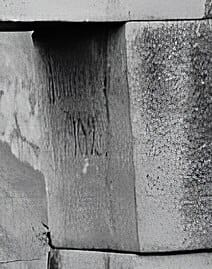

antigua ciudad inca es uno de los tesoros más preciados de Perú. Fue construida a mediados del siglo XV
y se cree que fue una de las residencias del noveno inca del Tahuantinsuyo, Pachacútec, aunque en ella
también están los restos de un santuario. Su nombre significa montaña vieja, y hace alusión al lugar
donde se ubica, a unos 2453 metros de altura, en un promontorio rocoso entre los cerros de Huchuy
Picchu y Huayna Picchu.
La quebrada de Picchu, ubicada a medio camino entre los Andes y la floresta amazónica, fue una región
colonizada por poblaciones andinas, no selváticas, provenientes de las regiones de Vilcabamba y del
Valle Sagrado, en Cuzco, en busca de una expansión de sus fronteras agrarias. Las evidencias arqueo-
lógicas indican que la agricultura se practicaba en la región desde al menos el 760 a. C. Una

explosión demográfica se da a partir del período Horizonte Medio, desde el año 900 de nuestra era, por
grupos no documentados históricamente, pero que posiblemente estuvieron vinculados a la etnia Tampu del
Urubamba. Se cree que estos pueblos podrían haber formado parte de la federación Ayarmaca, rivales de
los primeros incas del Cuzco. En ese período se expande considerablemente el área agrícola «construida»
(andenes). No obstante, el emplazamiento específico de la ciudad que nos ocupa (la cresta rocosa que une
las montañas Machu Picchu y Huayna Picchu) no presenta huellas de haber tenido edificaciones antes del
siglo xv.
Las primeras referencias directas sobre visitantes de las ruinas de Machu Picchu indican que Agustín
Lizárraga, un arrendatario de tierras cusqueño, llegó al sitio el 14 de julio de 1902 guiando a los
también cusqueños Gabino Sánchez, Enrique Palma y Justo Ochoa. Los visitantes dejaron un graffiti
con sus nombres en uno de los muros del Templo de las Tres Ventanas que fue posteriormente verificado
por varias personas. Existen informaciones que sugieren que Lizárraga ya había visitado Machu
Picchu en compañía de Luis Béjar en 1894. Lizárraga les mostraba las construcciones a los «visi-
tantes», aunque la naturaleza de sus actividades no ha sido hasta hoy investigada.